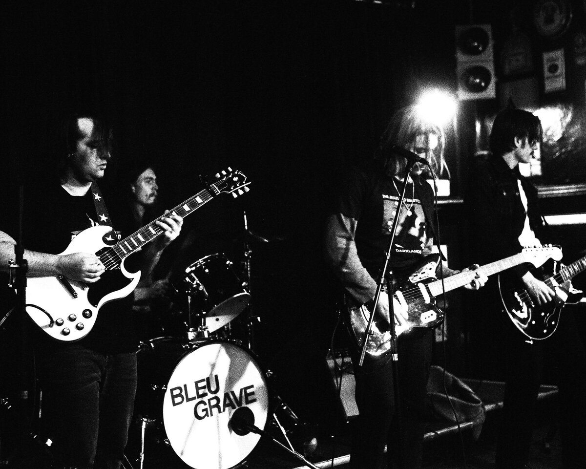

BleuGrave
Post-punk · Newport Beach, CA

Loud rooms, cold hymns.

the band
Bleu Grave
Bleu Grave is a post-punk band out of Newport Beach, California — heavy guitars, cold synths, and songs about the dark you keep in your pocket.
Solomon Swensen — rhythm guitar, vocals. Smith Swensen — lead guitar. Nick Fabbri — drums. Luke Fabbri — bass.